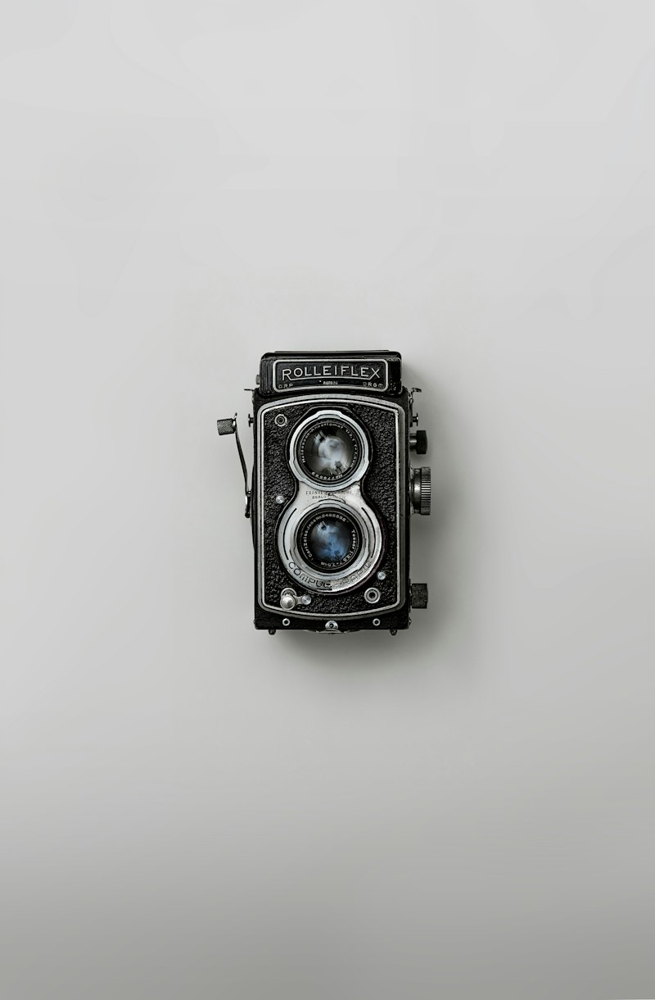

Íris
Casamentos
01 / 05Toca para disparar
Íris
Fotografia de casamento. Luz natural, tempo para o momento certo e nenhuma pose forçada.
Rolo de links
- ▸ 01A · PortfólioVer portfólioCasamentos, noivados e elopements
- ▸ 02A · PacotesPacotes de casamentoPreços a confirmar com o cliente
- ▸ 03A · ConversaMarcar uma conversaUm café, online ou presencial
- ▸ 04A · ClientesGalerias dos noivosAcesso privado com código
- ▸ 05A · DicasDicas para o grande diaLuz, horários e como esquecer a câmara
- ▸ 06A · RedesInstagram@iris.fotografia (exemplo)
O teu estilo
Toca na fotografia que mais se parece com o vosso dia.
Quem fotografa

Uma câmara, dois noivos.Fotografo como quem observa: devagar, com luz natural e sem pedir sorrisos que não existem. O resto é deixar o dia acontecer.